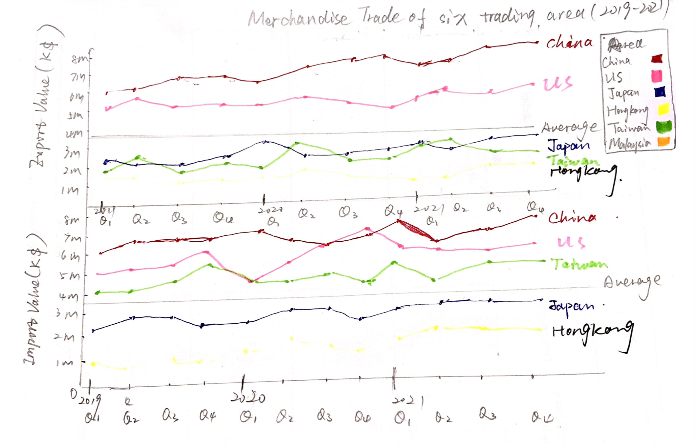
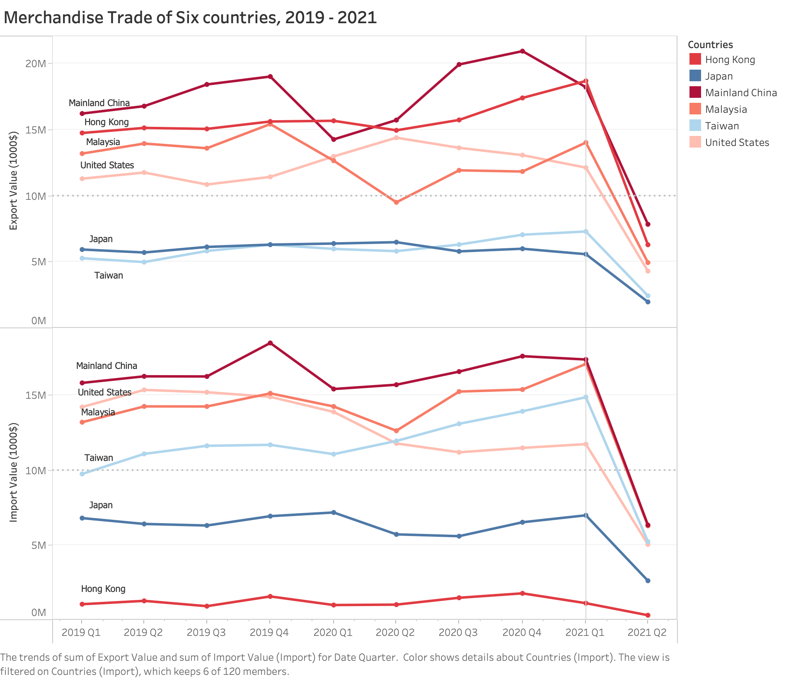

1. The original data

The DataViz Makeover-1 report aims to optimize the original graph by using the data from Department of Statistics in Singapore.
In this section, the origincal data will be implement makeover based on clarity dimension.
| Index | Critiques | Improvement |
|---|---|---|
| 1 | The title does not clarify that the Top-6 countries are extracted based on which benchmark, the number of import trading or export trading? Which period of time? | Create a subtitle to give a brief explanation. |
| 2 | The title shows the period of time is from 2019 to 2020 whereas the X-axis in graph is from 2019 to 2021. | Modify the period in title (2019-2021) |
| 3 | The graphs plot the line year to year, but the legend is written as ‘month of period’, which is absolutely wrong. | Change the legend of x-axis as ‘year of period’. |
| 4 | The x-axis in Japan graph only gives one mark of year (2020), 2019 and 2021 are removed from x-axis. | Include 2019 and 2021 in X-axis. |
| 5 | Name of category on the right is ‘Measure name’, which is not very clear | Rename the title of category as ‘Trading type’ |
In this section, the origincal data will be implement makeover based on Aesthentics dimension.
| Index | Critiques | Improvement |
|---|---|---|
| 1 | The shading would make people unable to differentiate which line is export and which line is import. | Make the area under the line blank rather than filled them up with color. |
| 2 | The unit length of Y-axis is different from one to another, which is not clear for comparison. | Standardize the unit length of Y-axis (for example 1 million) |
| 3 | Each graph has different width, which looks inconsistent. It is also difficult to compare. | Set the graphs to keep the same width. |
| 4 | The 6 graph is sorted in a random order instead of a logical way, which is not very suitable for people to compare. | Use one of dimension to sort them. |
| 5 | The x-axis marks are removed which is difficult to detect a clear boundary between each year. | Mark each year in x-axis. |

There are several rows on top of table which is unnecessary in data, so I removed them from excel.
 Since we need to compare the trading value based on countries instead of region. The first 6 rows show total value based on continents, so I removed them also.
Since we need to compare the trading value based on countries instead of region. The first 6 rows show total value based on continents, so I removed them also.


Once two tables are done with the 2 steps above, import them into tableau.
Blend 2 data by linking Data relationship and country relationship between two tables.

 A sign will appear next to the linked column in primary data.
A sign will appear next to the linked column in primary data.


Drag either one of country in two table into the filter position (since two country columns are linked). Select particular 6 country in the list.

Drag country into ‘color’ in the pane, since there are lots of countries in the column, so we need to filter first then add. Check the particular 6 countries, then select ok.
The initial colors in the filter are shown like the picture below.
 I add a reference line in each graph to determine the hue of line:
I add a reference line in each graph to determine the hue of line:

Title was changed as ‘Merchandise Trade of Six Countries, 2019-2021), Y-axis title was changed as ‘Import Value (1000 $)’ and ‘Export Value (1000$), X-axis title was removed.

Right click on the sum (import value) > quick table calculation > percent of total.


Drag line graph into the left and drag two tables int the right.
Using Object > Text > drag text to the bottom, then add the source and the raw data link.
The final dashboard would be shown like the picture below. 